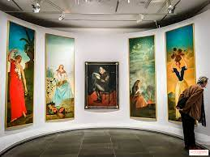
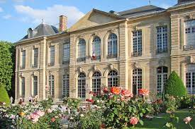
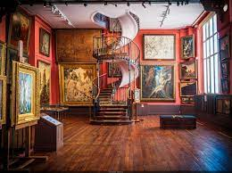
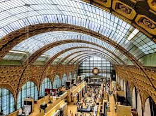

Le Louvre

Le Louvre est peut-être le musée le plus célèbre du monde, avec une collection impressionnante d'œuvres d'art de différentes époques et cultures.
Adresse: Rue de Rivoli, 75001 Paris
Contact: +33 1 40 20 53 17
Heures d'ouverture: Ouvert tous les jours sauf le mardi, de 9h à 18h, jusqu'à 21h45 les mercredis et vendredis.
Site Web: https://www.louvre.fr/
Mon Œuvre Préférée : La Mort de la Vierge peinte par Le Caravage
Petite anecdote pour briller en société: La Joconde a été volée en 1911 par un italien qui croyait que celle-ci avait été volée par Napoléon elle et a été retrouvée deux ans plus tard en Italie. Depuis lors, elle est conservée derrière une vitre pare-balles.
Musée de l'Orangerie
Le Musée de l'Orangerie est célèbre pour ses Nymphéas de Monet. Cet artiste me touche particulièrement car j'adore son rapport à l'eau dans ses peintures; elle se prend toujours dans un jeu de reflet sublime.
Adresse: Jardin Tuileries, 75001 Paris
Contact: +33 1 44 77 80 07
Heures d'ouverture: Ouvert tous les jours sauf le mardi, de 9h à 18h
Site Web: https://www.musee-orangerie.fr/
Mon Œuvre Préférée: Les Nymphéas de Claude Monet pour ses reflets lumineux.
Anecdote: Monet a peint ses Nymphéas dans son jardin à Giverny, à environ 80 km de Paris. Il a construit un étang et a planté des fleurs pour s'inspirer de la nature.
Musée Rodin
Le Musée Rodin est consacré à l'œuvre de l'artiste français Auguste Rodin, qui est célèbre pour ses sculptures en bronze, notamment Le Penseur et Le Baiser ou la porte des enfers.
Adresse: 77 Rue de Varenne, 75007 Paris
Contact: +33 1 44 18 61 10
Heures d'ouverture: Ouvert tous les jours sauf le lundi, de 10h à 17h45
Site Web: https://musee-rodin.fr/
mon Œuvre Préférée: Le Penseur
Anecdote pour les intimes: Le Penseur a été créé pour être placé au sommet de La Porte de l'Enfer, une sculpture monumentale de Rodin représentant une scène de La Divine Comédie de Dante. Finalement, il est devenu une œuvre autonome.
Musée Gustave Moreau
Le Musée Gustave Moreau est situé dans la maison et l'atelier du peintre symboliste Gustave Moreau. Il abrite plus de 14 000 dessins, peintures et aquarelles de Moreau et de ses contemporains. Même si c'est un petit musée situé vers l'opéra Garnier, c'est un de mes préférés
Adresse: 14 Rue de la Rochefoucauld, 75009 Paris
Contact: +33 1 48 74 38 50
Heures d'ouverture: Ouvert tous les jours sauf le mardi, de 10h à 18h15
Site Web: https://www.musee-moreau.fr/
Œuvre Préférée: Jupiter et Sémélé
Anecdote: Gustave Moreau était un artiste solitaire et mystique. Il aimait travailler la nuit et avait l'habitude de ne pas ouvrir la porte de son atelier aux visiteurs. Son oeuvre a inspiré de nombreux artistes comme Huysmans, Oscar Wilde et Houellebcq
Musée d'Orsay
Le Musée d'Orsay est installé dans une ancienne gare ferroviaire et abrite des collections d'art moderne et contemporain, ainsi que des œuvres impressionnistes et post-impressionnistes. la dernière exposition sur Munch était vraiment bonne.
Adresse: 1 Rue de la Légion d'Honneur, 75007 Paris
Contact: +33 1 40 49 48 14
Heures d'ouverture: Ouvert tous les jours sauf le lundi, de 9h30 à 18h
Site Web: https://www.musee-orsay.fr/
mon Œuvre Préférée: Bal du Moulin de la Galette de Pierre-Auguste Renoir
Anecdote: Bal du Moulin de la Galette est une peinture de la vie parisienne de la fin du 19ème siècle, représentant une scène de danse en plein air dans un moulin de Montmartre. Elle est considérée comme l'une des œuvres les plus célèbres de Renoir.